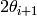
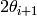

ConvertCWPDMDToSpectra dialog.
Table of Contents
Convert constant wavelength (CW) powder diffraction (PD) data in MDEventWorksapces to a single-spectrum MatrixWorkspace, i.e., binning the diffraction data to single spectrum according to neutron’s scattering angle, d-spacing or Q.
| Name | Direction | Type | Default | Description |
|---|---|---|---|---|
| InputWorkspace | Input | MDEventWorkspace | Mandatory | Name of the input MDEventWorkspace that stores detectors counts from a constant-wave powder diffraction experiment. |
| InputMonitorWorkspace | Input | MDEventWorkspace | Mandatory | Name of the input MDEventWorkspace that stores monitor counts from a constant-wave powder diffraciton experiment. |
| BinningParams | Input | dbl list | A comma separated list of first bin boundary, width, last bin boundary. Optionally this can be followed by a comma and more widths and last boundary pairs. Negative width values indicate logarithmic binning. | |
| OutputWorkspace | Output | MatrixWorkspace | Mandatory | Name of the output workspace for reduced data. |
| UnitOutput | Input | string | 2theta | Unit of the output workspace. Allowed values: [‘2theta’, ‘dSpacing’, ‘Momentum Transfer (Q)’] |
| NeutronWaveLength | Input | number | Optional | Constant wavelength of the neutrons from reactor source. |
| NeutornWaveLengthPropertyName | Input | string | wavelength | Property name of the neutron wavelength in the sample log.If output unit is other than 2theta and NeutronWaveLength is not given,then the neutron wavelength will be searched in sample logs by name specified by this property. |
| ScaleFactor | Input | number | 1 | Scaling factor on the normalized counts. |
| ExcludedDetectorIDs | Input | int list | A comma separated list of integers to indicate the IDs of the detectors that will be excluded from binning. | |
| LinearInterpolateZeroCounts | Input | boolean | True | If set to true and if a bin has zero count, a linear interpolation will be made to set the value of this bin. It is applied to the case that the bin size is small. |
This algorithms is to collect the all the counts on the detectors among
a set of measurements, which belong to a same experiment run,
and bin them according to detector’s position, i.e.,  .
.
In this algorithm’s name, ConvertCWPDMDToSpectra, CW stands for constant wave (reactor-source instrument); PD stands for powder diffraction; and MD stands for MDEventWorkspace because the input of this algorithms are two MDEventWorkspaces.
This algorithm takes 2 MDEventWorkspaces as inputs. One stores the detectors’ counts; and the other stores the monitors’ counts. These two MDEventWorkspaces are generated from algorithm ConvertSpiceToRealSpace.
Futhermore, the unit of the output matrix workspace can be converted to
d-spacing and momentum transfer ( ).
).
Two input MDEventWorkspaces that are required.
{it InputWorkspace} is an MDEventWorkspace stores detectors counts and sample logs. Each run in this MDEventWorkspace corresponds to an individual measurement point in experiment run. Each run has its own instrument object.
The other input MDEventWorkspace, i.e., {it InputMonitorWorkspace} contains the monitor counts of each measurement point. The signal value of each MDEvent in this workspace is the monitor counts corresponding to an individual detector.
These two MDEventWorkspace should have the same number of runs and same number of MDEvent.
The output is a MatrixWorkspace containing the reduced powder diffraction data from a SPICE file for powder diffractometers in HFIR.
Besides the data, it also has the sample logs’ copied from the input workspace.
The sample logs of the reduced HFIR powder diffraction data are aggregrated from all measurements points in the experiment run.
They are copied from the last ExperimentInfo object of the input MDWorkspace {it InputWorkspace}.
Three units are supported by this algorithm via property UnitOutput.
They are , dSpacing and MomentumTransfer(Q).
The following equations are used to convert the units.


Therefore neutron wavelength  must be given either in sample log or via input property
if the unit of the output workspace is targeted to be dSpacing or MomentumTransfer.
must be given either in sample log or via input property
if the unit of the output workspace is targeted to be dSpacing or MomentumTransfer.
According to the input binning parameters, the bins in are created as
 .
.
If the unit of ouput workspace is specified as dSpacing or MomentrumTransfer,
then the bins should be created as  or
or  respectively.
respectively.
For each detector, if its position falls between  and ,,
and ,,
 and
and  , or
, or  and
and  ,
then its counts is added to
,
then its counts is added to  and the corresponding monitor counts is added to
and the corresponding monitor counts is added to
 .
.
The singals on these bins are normalized by its monitor counts, such that

The error (i.e., standard deviation) is defined as

The normalized histogram can be scaled up by a factor specified by ScaleFactor. In most cases, the scaling factor is equal to average monitor counts of all measurements.
If the scaling factor is specified, then
the standard error of data point  will be converted to
will be converted to

where  is the scaling factor,
is the scaling factor,  is the standard error of the normalized signal
of data point , and
is the standard error of the normalized signal
of data point , and
 is the standard error of the signal scaled up.
is the standard error of the signal scaled up.
If a user specifies a bin size that is smaller than the resolution of the instrument, then it is very likely to occur that some bins have zero count, while their neighboring bins have counts that are significantly larger than noise. In this case, an option to do linear interpolation to the zero count bins in the histogram is provided. Property LinearInterpolateZeroCounts is used to set the flag to do linear interpolation.
The linear interpolation will be only applied to those zero-count bins within the measuring range.
Detectors can be excluded from conversion process. They can be specified by their Detector ID*s via property *ExcludedDetectorIDs. If a detector is specified as being excluded, all of its counts of all runs (pts) will be taken out of binning process.
This algorithm is the third step to reduce powder diffraction data from a SPICE file. Following algorithm LoadSpiceAscii, which loads SPICE file to a TableWorkspace and {it ConvertSpiceToRealSpace}, which converts the TableWorkspace to MDEvnetWorkspace that is able to reflect all the information of the epxeriment, {it ConvertCWPDMDToSpectra} goes through all the detectors’ counts and rebins the data.
Experimental data with different neutron wavelengths can be binned together to d-spacing or momentum transfer space.
Example - reduce a SPICE file for HB2A to Fullprof file:
# create table workspace and parent log workspace
LoadSpiceAscii(Filename='HB2A_exp0231_scan0001.dat',
IntegerSampleLogNames="Sum of Counts, scan, mode, experiment_number",
FloatSampleLogNames="samplemosaic, preset_value, Full Width Half-Maximum, Center of Mass",
DateAndTimeLog='date,MM/DD/YYYY,time,HH:MM:SS AM',
OutputWorkspace='Exp0231DataTable',
RunInfoWorkspace='Exp0231ParentWS')
# load for HB2A
ConvertSpiceDataToRealSpace(InputWorkspace='Exp0231DataTable',
RunInfoWorkspace='Exp0231ParentWS',
OutputWorkspace='Exp0231DataMD',
OutputMonitorWorkspace='Exp0231MonitorMD')
# Convert from real-space MD to Fullprof data
ConvertCWPDMDToSpectra(
InputWorkspace = 'Exp0231DataMD',
InputMonitorWorkspace = 'Exp0231MonitorMD',
OutputWorkspace = 'Exp0231Reduced',
BinningParams = '5, 0.1, 150',
UnitOutput = '2theta',
ScaleFactor = 100.,
LinearInterpolateZeroCounts = True
)
# output
ws = mtd["Exp0231Reduced"]
vecx = ws.readX(0)
vecy = ws.readY(0)
vece = ws.readE(0)
for i in [100, 100, 1101, 1228]:
print "2theta = %-5f, Y = %-5f, E = %-5f" % (vecx[i], vecy[i], vece[i])
Output:
2theta = 15.000000, Y = 0.386563, E = 0.024744
2theta = 15.000000, Y = 0.386563, E = 0.024744
2theta = 115.100000, Y = 1.846279, E = 0.054287
2theta = 127.800000, Y = 0.237738, E = 0.027303
Categories: Algorithms | Diffraction | MDAlgorithms
{kind=link}